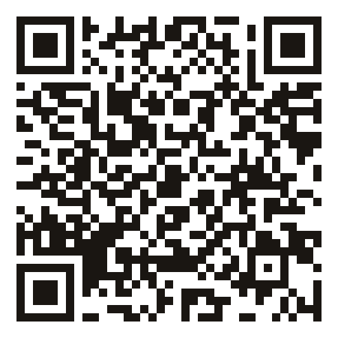
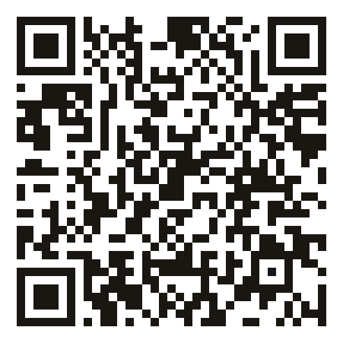

Proyecto Guelaguetza · Hack4Edu 2026
EMMA — el Sistema de Aprendizaje Circunstancial. Pincha donde quieras: el vídeo, la app, el deck, el dossier o el copiloto.
Dossier para el jurado
Escanéalos desde la pantalla


EMMA · Proyecto Guelaguetza — Territorio · Conocimiento · Desarrollo
Hack4Edu 2026 · ProFuturo × Universidad Pontificia de Salamanca
Respuestas preparadas · sin internet · sin IA generativa